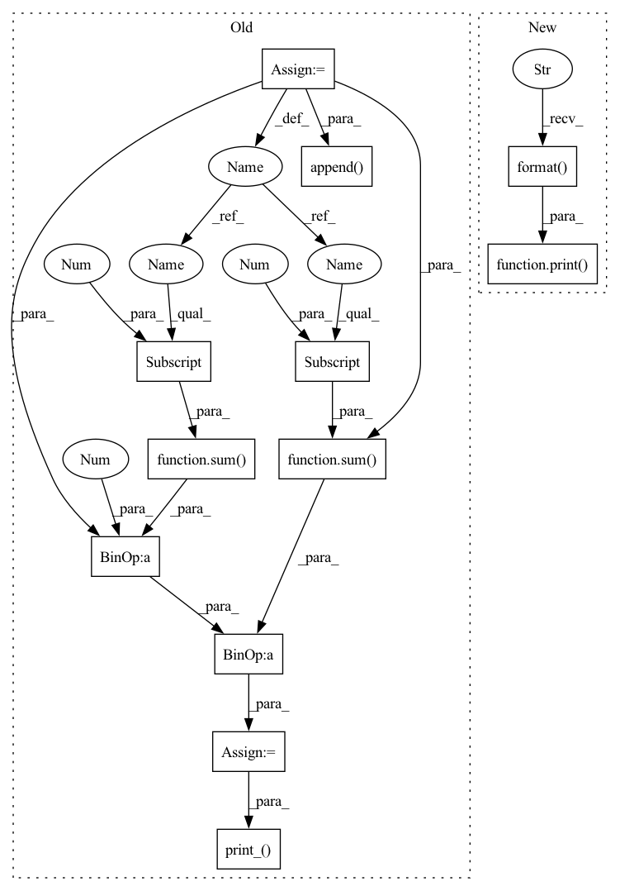

Pattern ID :15491
Before Change
// evaluate all clients
def evaluate(self):
stats = self.test_accuracy()
stats_train = self.train_accuracy_and_loss()
test_acc = sum(stats[2])*1.0 / sum(stats[1])
train_acc = sum(stats_train[2])*1.0 / sum(stats_train [1])
train_loss = sum(stats_train[3])*1.0 / sum(stats_train[1])
self.rs_test_acc.append(test_acc)
self.rs_train_acc.append(train_acc)
self.rs_train_loss.append( train_loss)
self.print_( test_acc, train_acc, train_loss)
def print_(self, test_acc, train_acc, train_loss):
print("Average Test Accurancy: {:.4f}".format(test_acc))After Change
self.rs_test_auc.append(test_auc)
// self.rs_train_loss.append(train_loss)
print( "Average Test Accurancy: {:.4f}".format( test_acc))
print("Average Test AUC: {:.4f}".format(test_auc))
// self.print_(test_acc, train_acc, train_loss)
In pattern: SUPERPATTERN
Frequency: 3
Non-data size: 12
Instances Fragment ID: 52554754
Project Name: tsingz0/pfl-non-iid
Commit Name: 4f394efe04f30dbd3cab4278467631854f997903
Time: 2022-01-14
Author: 2719584131@qq.com
File Name: system/flcore/servers/serverbase.py
M Class Name: Server
N Class Name: Server
M Method Name: evaluate(1)
N Method Name: evaluate(1)
M Parent Class: object
N Parent Class: object
M File Name: system/flcore/servers/serverbase.py
N File Name: system/flcore/servers/serverbase.py
M Start Line: 195
M End Line: 204
N Start Line: 193
N End Line: 205
Before Change
c.train_one_step()
stats = self.test_accuracy()
stats_train = self.train_accuracy_and_loss()
// set local model back to client for training process
for i, c in enumerate(self.clients):
c.clone_model(models_temp[i], c.model)
test_acc = sum(stats[2])*1.0 / sum(stats[1])
train_acc = sum(stats_train[2])*1.0 / sum( stats_train[1])
train_loss = sum(stats_train[3])*1.0 / sum(stats_train[1])
self.rs_test_acc.append(test_acc)
self.rs_train_acc.append(train_acc)
self.rs_train_loss.append( train_loss)
self.print_( test_acc, train_acc, train_loss)
After Change
test_acc = sum(stats[2])*1.0 / sum(stats[1])
self.rs_test_acc.append(test_acc)
print( "Average Test Accurancy: {:.4f}".format( test_acc)) Fragment ID: 52554741
Project Name: tsingz0/pfl-non-iid
Commit Name: 4f394efe04f30dbd3cab4278467631854f997903
Time: 2022-01-14
Author: 2719584131@qq.com
File Name: system/flcore/servers/serverperavg.py
M Class Name: PerAvg
N Class Name: PerAvg
M Method Name: evaluate_one_step(1)
N Method Name: evaluate_one_step(1)
M Parent Class: Server
N Parent Class: Server
M File Name: system/flcore/servers/serverperavg.py
N File Name: system/flcore/servers/serverperavg.py
M Start Line: 65
M End Line: 78
N Start Line: 64
N End Line: 67
Before Change
def evaluate_personalized_model(self):
stats = self.test_accuracy_personalized()
stats_train = self.train_accuracy_and_loss_personalized()
test_acc = sum(stats[2])*1.0 / sum(stats[1])
train_acc = sum(stats_train[2])*1.0 / sum( stats_train[1])
train_loss = sum(stats_train[3])*1.0 / sum(stats_train[1])
self.rs_test_acc_per.append(test_acc)
self.rs_train_acc_per.append(train_acc)
self.rs_train_loss_per.append( train_loss)
self.print_( test_acc, train_acc, train_loss)
def save_results(self):
algo = self.dataset + "_" + self.algorithm
result_path = "../results/"After Change
// self.rs_train_acc_per.append(train_acc)
// self.rs_train_loss_per.append(train_loss)
print( "Average Personalized Test Accurancy: {:.4f}".format( test_acc))
// self.print_(test_acc, train_acc, train_loss)
def save_results(self):
algo = self.dataset + "_" + self.algorithm Fragment ID: 52554745
Project Name: tsingz0/pfl-non-iid
Commit Name: 4f394efe04f30dbd3cab4278467631854f997903
Time: 2022-01-14
Author: 2719584131@qq.com
File Name: system/flcore/servers/serverpFedMe.py
M Class Name: pFedMe
N Class Name: pFedMe
M Method Name: evaluate_personalized_model(1)
N Method Name: evaluate_personalized_model(1)
M Parent Class: Server
N Parent Class: Server
M File Name: system/flcore/servers/serverpFedMe.py
N File Name: system/flcore/servers/serverpFedMe.py
M Start Line: 105
M End Line: 114
N Start Line: 102
N End Line: 110